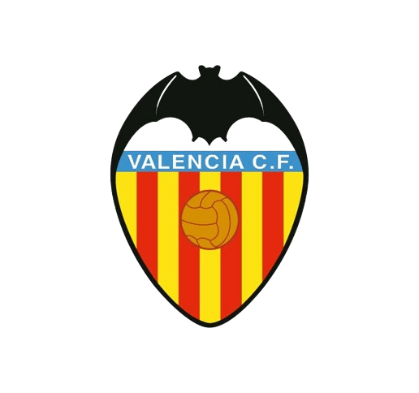

El Barcelona no puede con el PSG
Tensión en el vestuario entre Araujo y Gundogan
El Clásico, única vía de ilusión para el Barcelona
Dom 21/04/2024
Real Madrid vs Barcelona

Lun 29/04/2024
Barcelona vs Valencia
Sáb 04/05/2024
Girona vs Barcelona

Dom 12/05/2024
Barcelona vs Real Sociedad
Liga
Destacado
Champions
Destacado
Destacado
Destacado